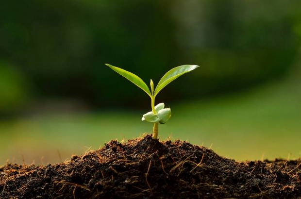

Conteúdo principal
Melhorando a Qualidade de Vida das Pessoas em Situação de Necessidade
A sustentabilidade é uma abordagem fundamental que busca satisfazer as necessidades atuais sem comprometer a capacidade das gerações futuras de suprirem suas próprias necessidades. Além de garantir a gestão responsável dos recursos naturais, a sustentabilidade também se concentra na redução do desperdício e na adoção de práticas conscientes em todos os aspectos da vida. Ao aplicar esse conceito em comunidades carentes, podemos criar um ambiente mais equitativo e promover uma mudança duradoura, fortalecendo sua resiliência e qualidade de vida. Isso envolve a implementação de soluções sustentáveis que abordem desafios como a escassez de recursos, acesso limitado a serviços básicos e desigualdades socioeconômicas. A sustentabilidade em comunidades vulneráveis não apenas melhora as condições atuais, mas também estabelece bases sólidas para um futuro melhor e mais inclusivo.
A otimização de recursos desempenha um papel crucial na melhoria da qualidade de vida das pessoas em situação de necessidade. Ao utilizar os recursos disponíveis de maneira inteligente e eficiente, evitando desperdícios e maximizando seus benefícios, é possível promover um impacto positivo significativo. Iniciativas como reutilização, reciclagem, redução do consumo desnecessário e promoção de práticas sustentáveis desempenham um papel fundamental nesse processo. Ao adotar essas medidas, podemos garantir um uso mais responsável dos recursos e criar um ambiente mais equilibrado, com benefícios de longo prazo tanto para as comunidades em situação de necessidade quanto para o planeta como um todo.
A educação e a conscientização desempenham um papel vital na promoção da mudança sustentável em comunidades carentes. Ao fornecer informações sobre a importância da sustentabilidade e da otimização de recursos, capacita-se as pessoas a adotarem práticas mais responsáveis em relação ao meio ambiente e aos seus recursos. Essa conscientização pode levar a ações simples, como a economia de água e energia, o cultivo de alimentos em espaços reduzidos e o reaproveitamento de materiais. Ao capacitar as comunidades carentes com conhecimentos e habilidades sustentáveis, elas podem tomar medidas concretas para melhorar sua qualidade de vida, ao mesmo tempo em que contribuem para a preservação do meio ambiente.

Para promover a sustentabilidade e a otimização de recursos de maneira eficaz, é crucial incentivar a participação ativa das comunidades e estabelecer parcerias com organizações locais, empresas e governos. Através dessas colaborações, é possível implementar projetos que ofereçam acesso a água potável, alimentos saudáveis, energia limpa e oportunidades de emprego sustentável, resultando em uma diferença significativa na vida das pessoas em necessidade. Além disso, a criação de cooperativas e a capacitação profissional desempenham um papel fundamental para promover a independência e a autossuficiência nas comunidades. Essas abordagens fortalecem a resiliência das comunidades carentes, permitindo que elas se tornem agentes de mudança sustentável em suas próprias realidades, enquanto também promovem a equidade e a prosperidade de longo prazo.